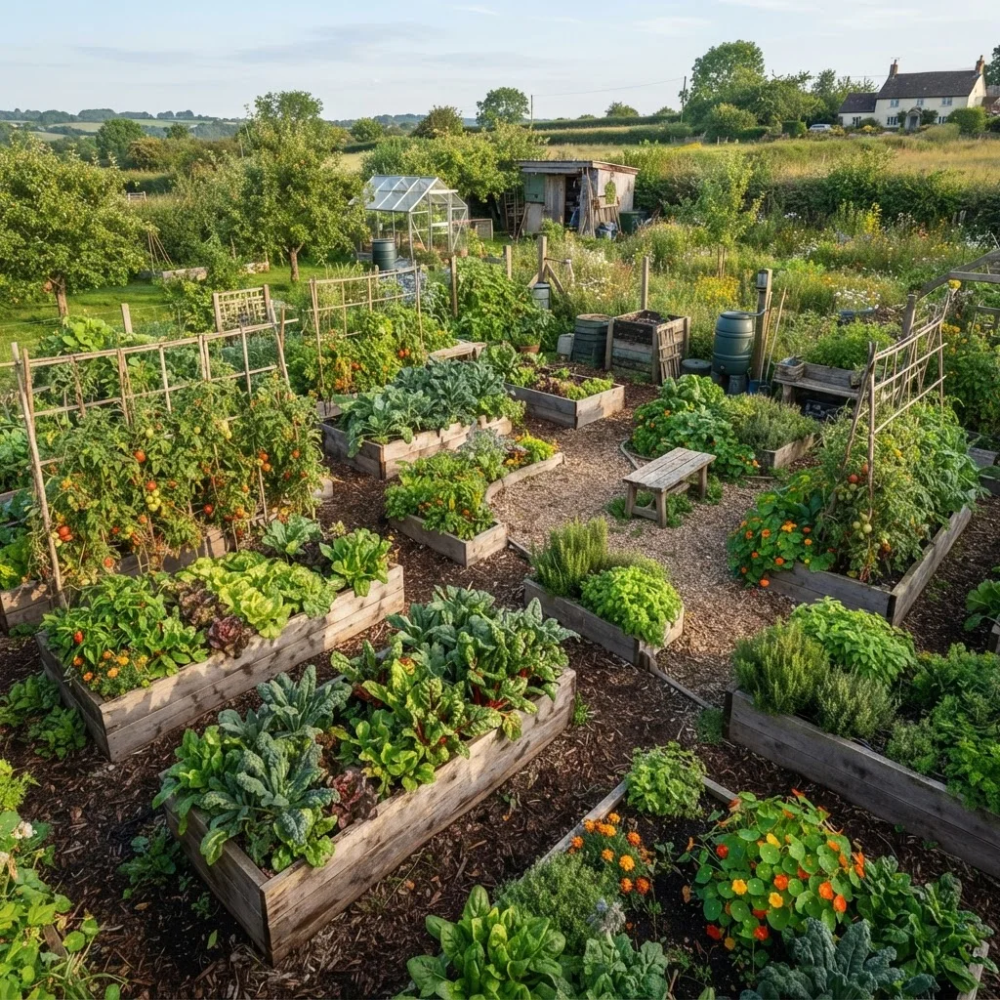
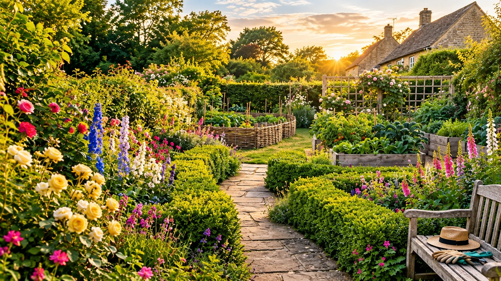
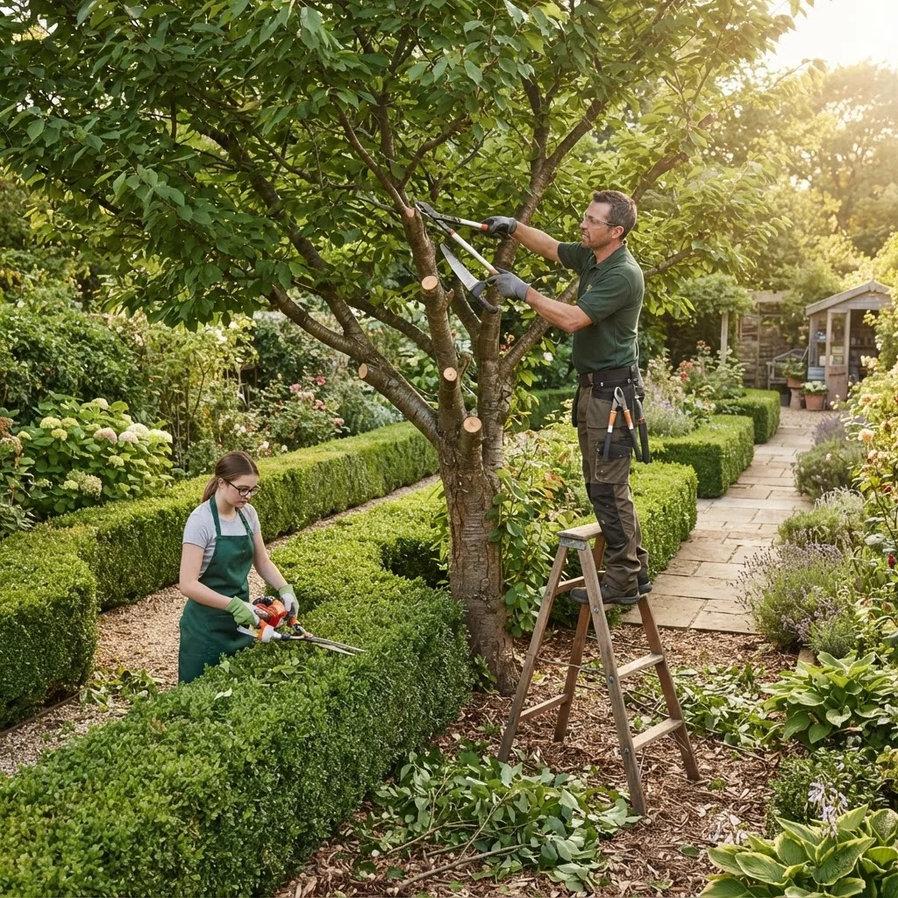
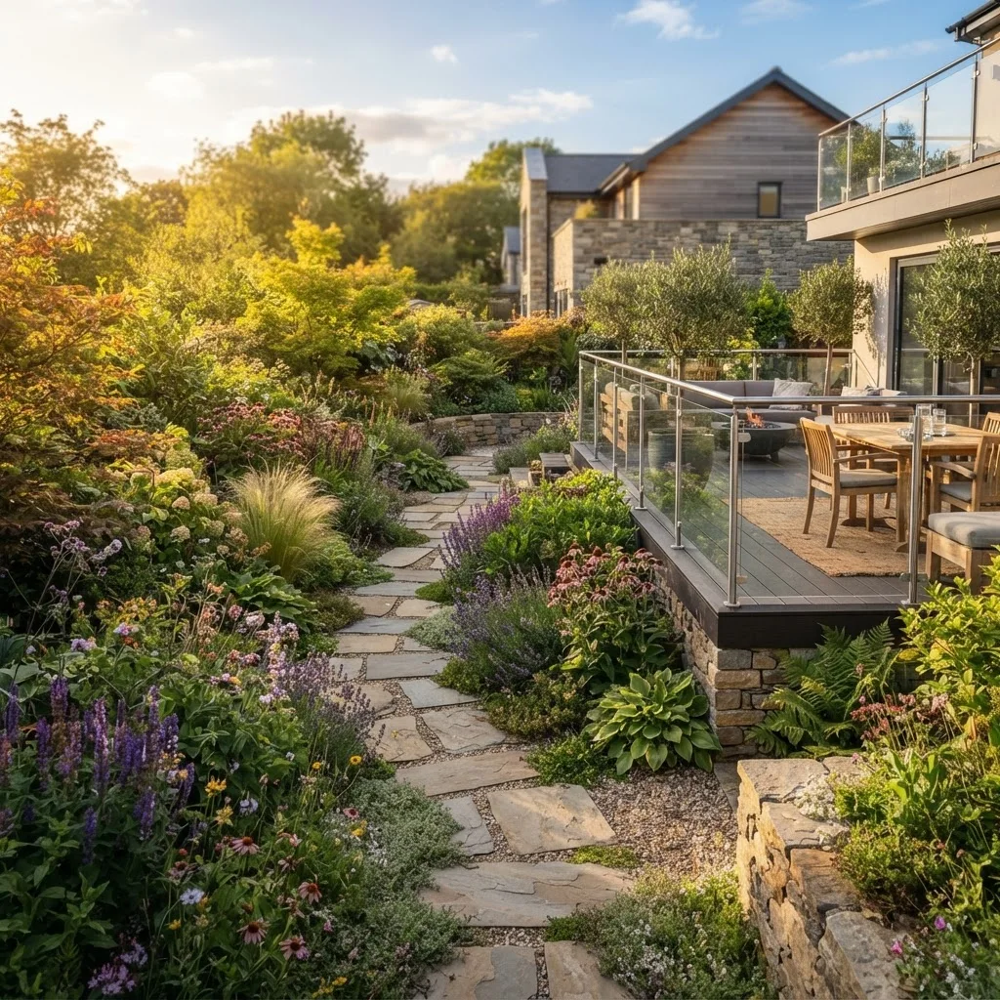
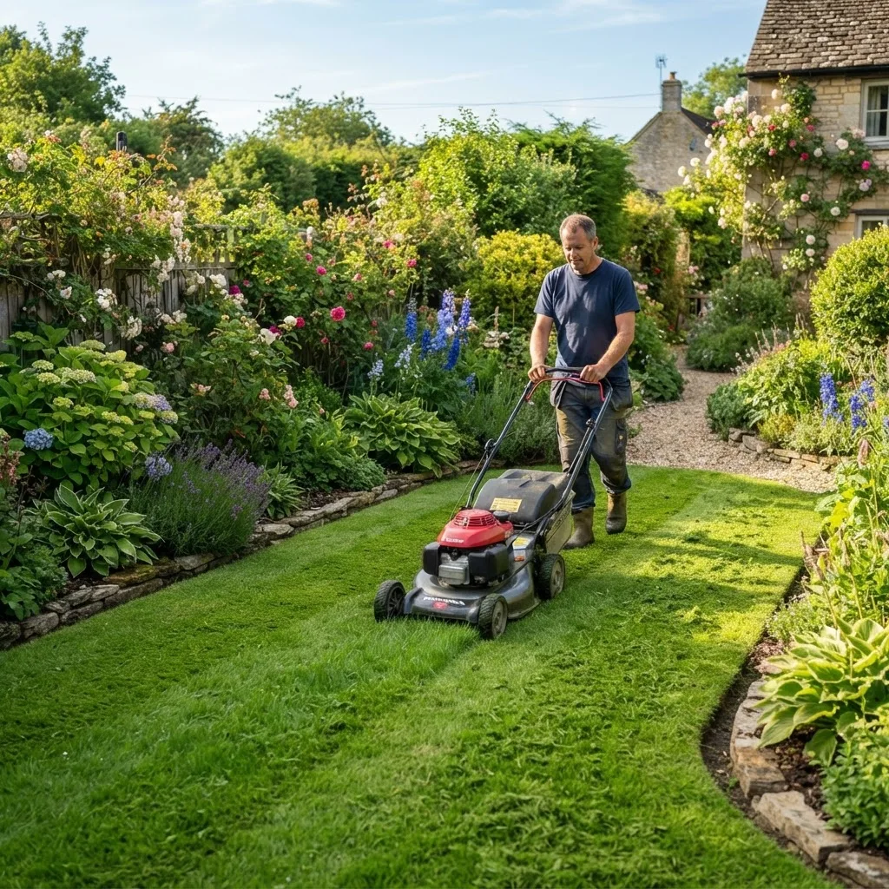
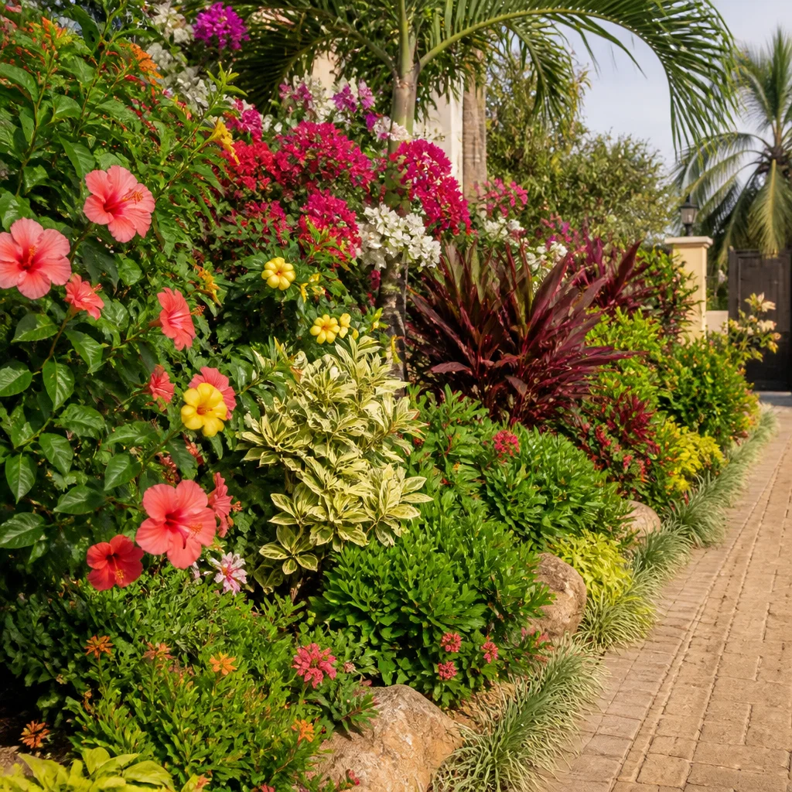
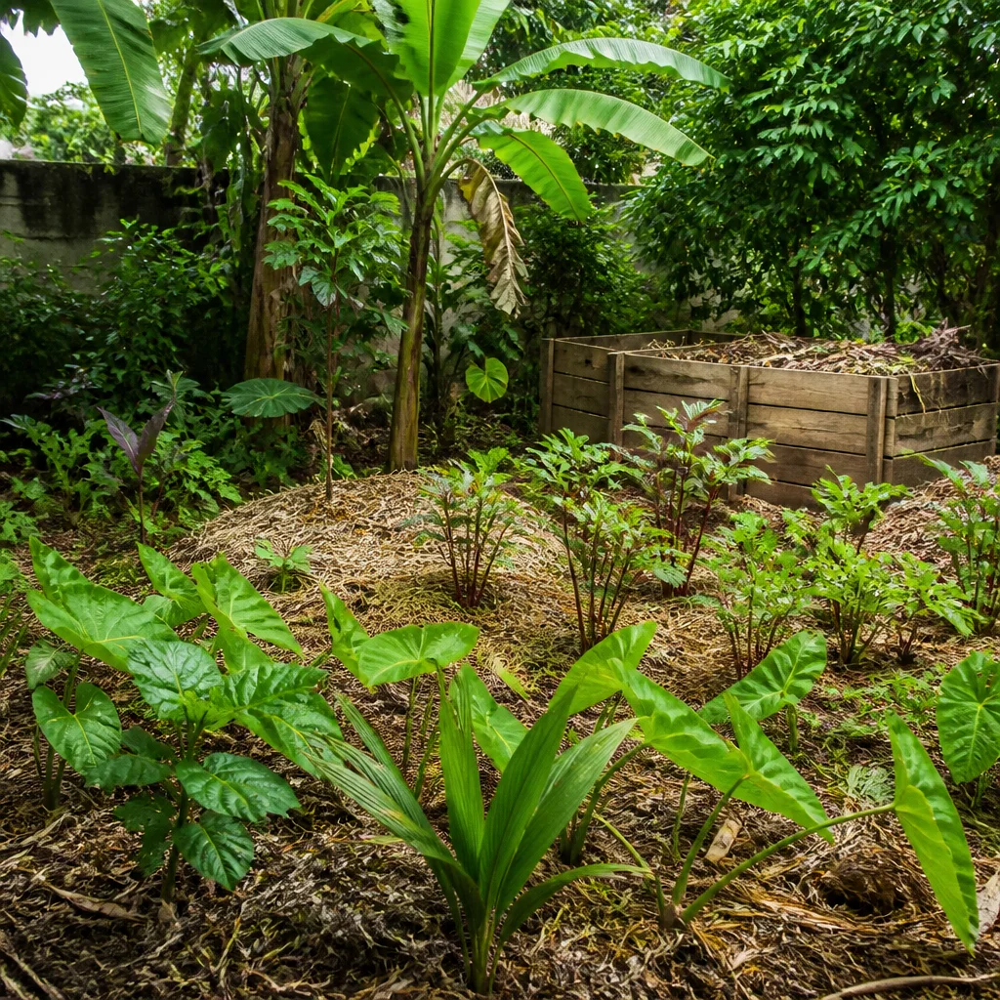
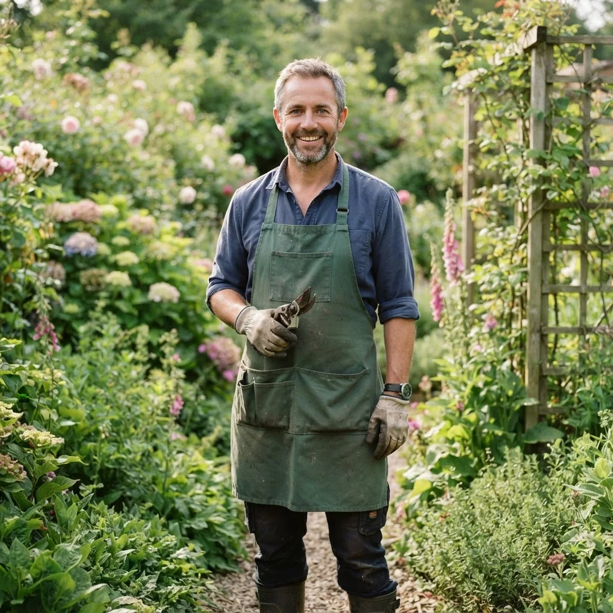

Potager & permaculture
Conception et entretien de potagers naturels, cultures durables et associations de plantes respectueuses du sol.

Entretien, création, élagage et potager en permaculture. Un jardinier passionné à votre service pour des espaces verts sains et durables, réalisés dans le respect de la nature.
Des petits travaux d'entretien aux grands projets d'aménagement, je m'occupe de tout avec soin et savoir-faire.

Conception et entretien de potagers naturels, cultures durables et associations de plantes respectueuses du sol.

Taille, élagage et abattage sécurisés de vos arbres et arbustes, en préservant leur santé et votre sécurité.

Conception de jardins sur mesure : massifs, allées, terrasses et espaces de vie extérieurs pensés pour vous.

Tonte, taille de haies, désherbage et nettoyage réguliers pour un jardin toujours impeccable au fil des saisons.

Plantation et mise en valeur de massifs fleuris adaptés à votre terrain et à l'exposition de votre jardin.

Paillage, compostage et méthodes sans produits chimiques pour un jardin vivant et respectueux de l'environnement.

Depuis plus de quinze ans, j'accompagne particuliers et professionnels dans l'entretien et l'embellissement de leurs espaces verts. Mon approche allie savoir-faire artisanal et respect du vivant.
Chaque jardin est unique : je prends le temps de comprendre vos envies et les spécificités de votre terrain pour vous proposer des solutions durables, esthétiques et adaptées à votre budget.
Un aperçu de mes interventions récentes, du potager à l'aménagement complet d'extérieur.
“Un travail impeccable ! Notre jardin n'a jamais été aussi beau. Ponctuel, soigné et de très bon conseil pour le choix des plantes.”
“Il a créé notre potager en permaculture de A à Z. On récolte nos propres légumes depuis le printemps, un vrai bonheur. Je recommande vivement.”
“Élagage de deux grands arbres réalisé en toute sécurité et nettoyage parfait derrière. Très professionnel et tarif honnête.”
Échangeons sur vos envies et imaginons ensemble un jardin qui vous ressemble, pour votre entière satisfaction.